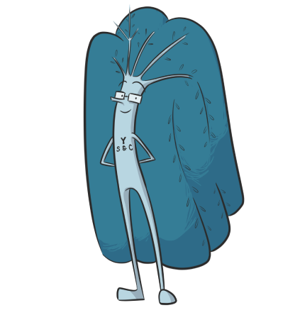

Impoverished children benefit greatly from high paying STEM jobs.
Chess allows them to develop the analytical and critical thinking skills
to perform these jobs and grant them an opportunity to fulfill their dreams.
Through our program, we will also teach them essential skills applicable
to all industries like coding, algebra, engineering, and the sciences.

Become a Mentor
Interested in making a difference?
Y STEM and Chess Inc. (YSC) is focused on resolving two
current social problems by providing a unique 21st Century
methodology to learning called “Mastery.”
The first focus is
on our society’s unfulfilled need for students with a firm
learning foundation to pursue a life in the world of STEM.
The second and the primary focus of YSC is fulfilling those
needs, by working with the children of our socially and
economically underrepresented population, to introduce and
engage them in the world of STEM.
`
We are looking for passionate individuals who love science,
technology, mathematics and engineering, as well as chess players
of all levels and tutors who are willing to make a change in the community!